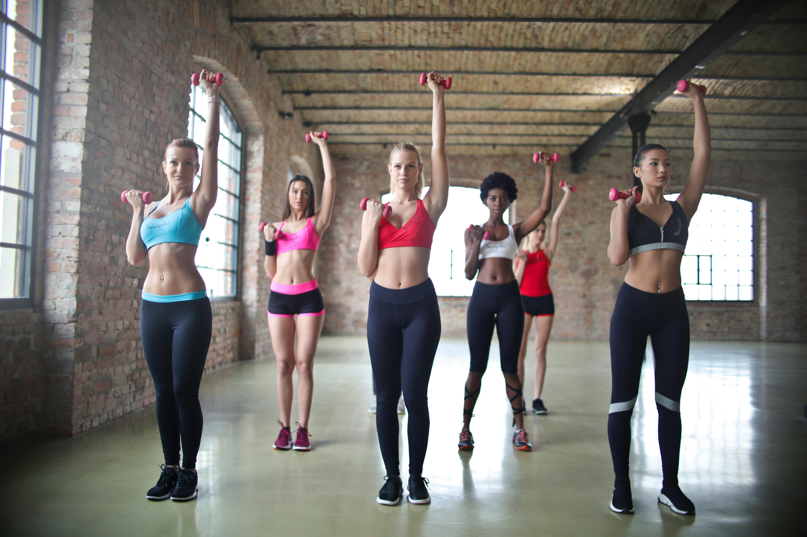

تمرینات قدرتی برای مبتدیان
شروع مسیر بدنسازی نیازمند دانش و برنامه مناسب است. در این مقاله به بررسی بهترین تمرینات قدرتی میپردازیم که برای افراد تازهکار بسیار مناسب هستند.
تمرینات قدرتی باعث افزایش توده عضلانی، بهبود استقامت و تقویت سلامت کلی بدن میشوند. مهم است که تمرینات به صورت اصولی و با رعایت نکات ایمنی انجام شود تا از آسیب دیدگی جلوگیری شود.
تمرینات پیشنهادی شامل حرکاتی مانند اسکوات، پرس سینه، و تمرین با دمبلها است که به تقویت عضلات اصلی بدن کمک میکنند. همچنین، تمرینات کششی در پایان هر جلسه توصیه میشود تا عضلات ریلکس و انعطافپذیری حفظ شود.
در ادامه، برنامه هفتگی تمرینات قدرتی برای مبتدیان ارائه شده است که میتوانید به راحتی دنبال کنید و نتایج ملموسی ببینید.
برنامه تمرین هفتگی
- دوشنبه: تمرینات بالا تنه (پرس سینه، دمبل پرس، بارفیکس)
- چهارشنبه: تمرینات پایین تنه (اسکوات، لانژ، پل باسن)
- جمعه: تمرینات ترکیبی و کششی
همچنین، نکات تغذیهای مهم برای ساخت عضله شامل مصرف پروتئین کافی، هیدراتاسیون مناسب و استراحت کافی است. همیشه به بدن خود گوش دهید و از فشار بیش از حد خودداری کنید.
برای اطلاعات بیشتر میتوانید به بخش بلاگ ما مراجعه کنید یا با مربیان باشگاه 24 ساعته تماس بگیرید.